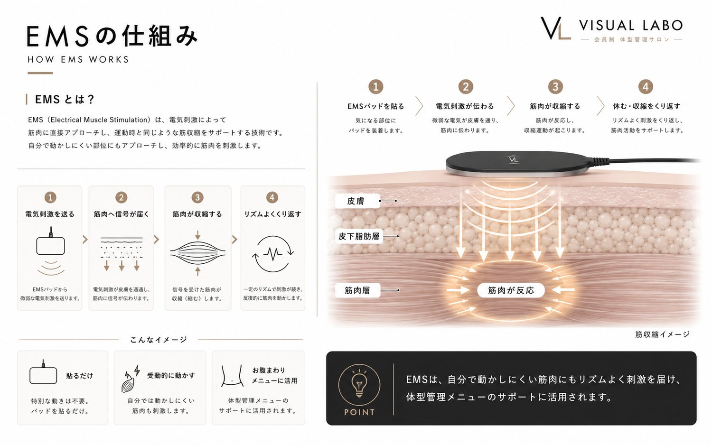
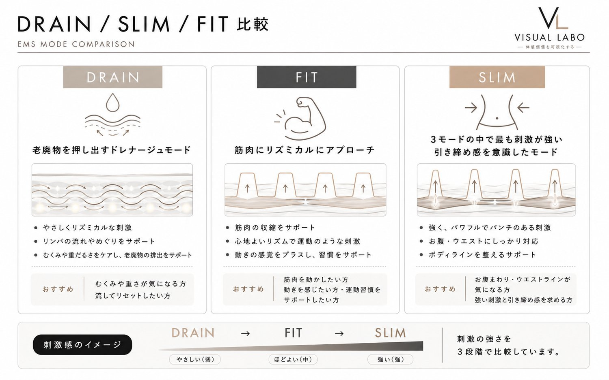
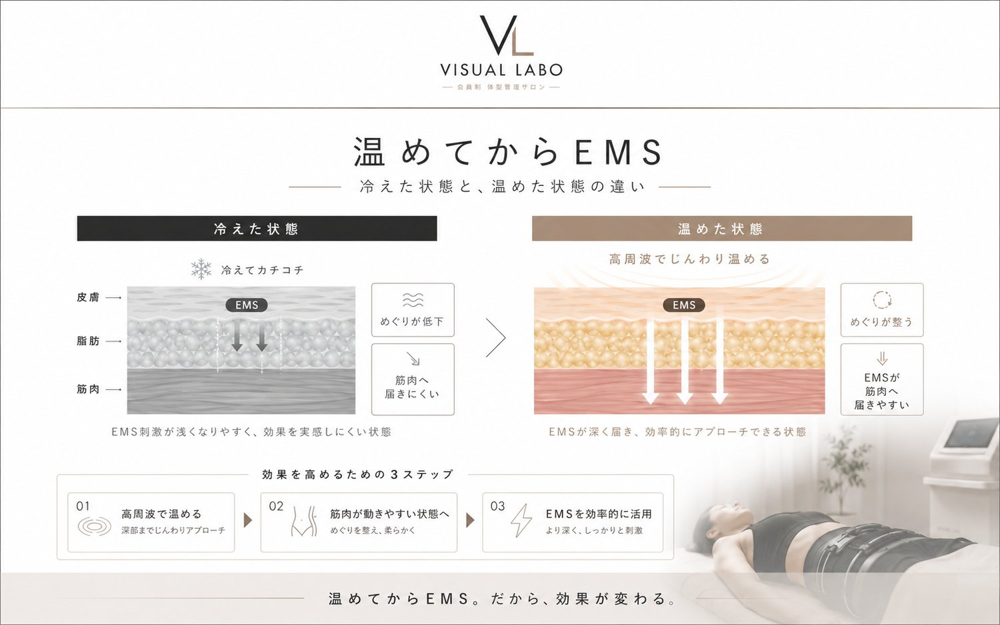

TECHNOLOGY ／ HYPER EMS
HYPER EMSとは筋肉に、電気ではたらきかける技術。
自分では鍛えにくい、お腹のインナーまで。
貼って過ごすだけで、引き締まった印象へ。
自分では鍛えにくい、お腹のインナーまで。
貼って過ごすだけで、引き締まった印象へ。
HYPER EMS（Electrical Muscle Stimulation）とは、筋肉に微弱な電気を流し、筋肉を受動的に収縮させる技術。自分の意思で動かさなくても、電気の刺激で筋肉がリズミカルに動きます。
運動では効かせにくい深部の筋肉や、お腹まわりのインナーにもダイレクトにアプローチ。貼って過ごすだけで筋肉にはたらきかけられるのが、HYPER EMSの魅力です。

MystiCore®のHYPER EMSは、市販の家庭用HYPER EMSとは出力も設計も別物です。クリニックやリハビリの現場でも応用される考え方をベースにした高出力設計で、深部の筋肉まで効率よく収縮させます。
めぐりを促し、流すための排出特化モード。温めたあとに使うことで、すっきりとした軽さへ導きます。
筋肉にしっかり効かせるフィットネス強化モード。深い筋肉まで、効率よく動かします。
しなやかな引き締め感を狙うシェイピングモード。ボディラインを整えたいときに。

高周波で深部までしっかり温めてからこれらのモードを使い分けることで、脂肪が厚いお腹まわりでも電気が奥まで伝わりやすくなり、深部の筋肉まで効率よくアプローチ。「温める」と「動かす」を1台で完結させます。
HYPER EMSは、ただ当てればいいわけではありません。順番が大切です。
脂肪が厚く冷えた状態では、電気が表面で止まりやすく、深部の筋肉まで届きにくくなります。
高周波で深部まで温めると、筋肉がやわらかくなり電気が伝わりやすく。HYPER EMSが奥まで届きやすくなります。
VISUAL LABOでは、高周波の深部加温で温めてからHYPER EMSへ。「温める→動かす」の順番で、効率よく仕上げます。

※ 安全のため、ペースメーカー等の体内電子機器をご使用の方・妊娠中の方・施術部位に金属インプラントがある方などは施術をお受けいただけません。持病や体調に不安のある方は、事前にご相談ください。
ドレナージュ・Slim・REHAB・回復など、モードごとの役割と、お腹・脚・肩首など部位別の使い分けを解説しています。神経に働きかけるHi-TENSは別ページでご紹介しています。
HYPER EMSのモード徹底ガイドを見る →